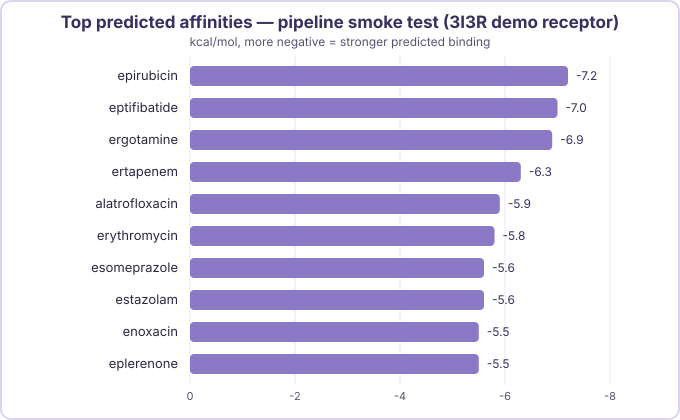
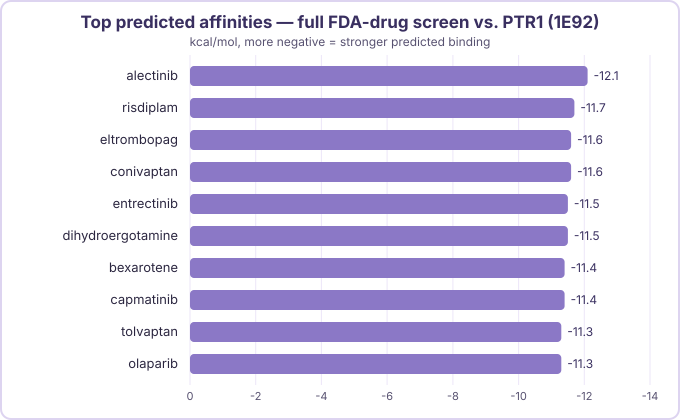

BioMedBound
Hi, I'm Alina Ren — a high school student who wants to be a doctor, and in the meantime I'm teaching myself molecular docking to go looking for new uses of drugs that are already FDA approved. This site is where I document that, along with the toy and book reviews I do for fun on the side. Below are cards linking to my three most recent updates; use the nav bar above for the full sections.
Molecular Docking
Hello Tools Part 2

Bringing in fPocket to actually find a binding site instead of guessing at one — and watching the predicted affinity jump from -5.1 to -7.8 kcal/mol because of it.
Molecular Docking
Building an FDA-Approved Drug Library

Scaling up from one ligand at a time to screening almost two thousand real FDA-approved drugs in a single run — the library, the ligand-prep pipeline, and a first pipeline smoke test.
Molecular Docking
Screening PTR1: A Real Target for Visceral Leishmaniasis

The library and the pipeline finally meet an actual disease target — pteridine reductase 1, from the parasite behind visceral leishmaniasis. First real screening result of the project.